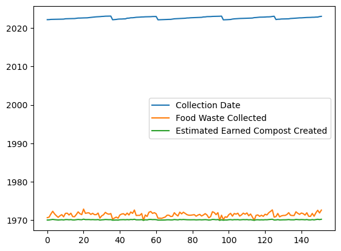
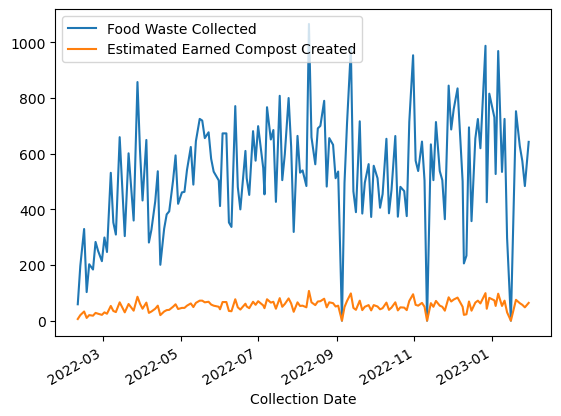

import pandas as pd
# This will import the pandas and numpy packages into your Python program.
df_json = pd.read_json('../data/food-waste-pilot/food-waste-pilot.json')
df_csv = pd.read_csv('../data/food-waste-pilot/food-waste-pilot.csv')
df_xlsx = pd.read_excel('../data/food-waste-pilot/food-waste-pilot.xlsx')An Introduction to Jupyter Notebooks
An Introduction to Jupyter Notebooks
Jupyter Notebooks are a file format (*.ipynb) that you can execute and explain your code in a step-wise format. > Jupyter Notebooks supports not only code execution in Python, but over 40 languages including R, Lua, Rust, and Julia with numerous kernels.
We can write in Markdown to write text with some level of control over your formatting. - Here’s a Link to Basic Markdown - Here’s a link to Markdown’s Extended Syntax
Topics We Will Cover - Importing different files and filetypes with pandas - Basic Statistical Analysis of tabular data with pandas and numpy - Creating Charts with python packages from the Matplotlib, Plotly, or HoloViz Ecosystem - Evaluate the potential usecases for each visualization package
This is you, enjoying the learning process.
Step 1: Import pandas into your python program.
df_csv.shape(152, 3)df_csv.head() # Grabs the top 5 items in your Dataframe by default.| Collection Date | Food Waste Collected | Estimated Earned Compost Created | |
|---|---|---|---|
| 0 | 2022-02-25 | 250.8 | 25 |
| 1 | 2022-03-02 | 298.8 | 30 |
| 2 | 2022-03-21 | 601.2 | 60 |
| 3 | 2022-03-28 | 857.2 | 86 |
| 4 | 2022-03-30 | 610.8 | 61 |
df_csv.tail() # Grabs the bottom 5 items in your Dataframe by default.| Collection Date | Food Waste Collected | Estimated Earned Compost Created | |
|---|---|---|---|
| 147 | 2022-10-12 | 385.8 | 39 |
| 148 | 2022-10-28 | 713.6 | 71 |
| 149 | 2022-10-31 | 953.4 | 95 |
| 150 | 2022-12-14 | 694.4 | 69 |
| 151 | 2023-01-06 | 968.6 | 97 |
df_csv.columnsIndex(['Collection Date', 'Food Waste Collected',
'Estimated Earned Compost Created'],
dtype='object')df_csv.dtypes # Returns the data types of your columns.Collection Date object
Food Waste Collected float64
Estimated Earned Compost Created int64
dtype: objectdf_csv.describe()| Food Waste Collected | Estimated Earned Compost Created | |
|---|---|---|
| count | 152.000000 | 152.000000 |
| mean | 526.873684 | 52.611842 |
| std | 197.838075 | 19.787631 |
| min | 0.000000 | 0.000000 |
| 25% | 398.050000 | 39.750000 |
| 50% | 531.500000 | 53.000000 |
| 75% | 658.900000 | 66.000000 |
| max | 1065.800000 | 107.000000 |
df_csv.info() # Returns index, column names, a count of Non-Null values, and data types.<class 'pandas.core.frame.DataFrame'>
RangeIndex: 152 entries, 0 to 151
Data columns (total 3 columns):
# Column Non-Null Count Dtype
--- ------ -------------- -----
0 Collection Date 152 non-null object
1 Food Waste Collected 152 non-null float64
2 Estimated Earned Compost Created 152 non-null int64
dtypes: float64(1), int64(1), object(1)
memory usage: 3.7+ KBThere are multiple methods to do type conversion using pandas as well.
# Oh no, we can see that our Collection Date is not the data type that we want, we need to convert it to a date value.
df_csv['Collection Date'] = pd.to_datetime(df_csv['Collection Date'])df_csv.info()<class 'pandas.core.frame.DataFrame'>
RangeIndex: 152 entries, 0 to 151
Data columns (total 3 columns):
# Column Non-Null Count Dtype
--- ------ -------------- -----
0 Collection Date 152 non-null datetime64[ns]
1 Food Waste Collected 152 non-null float64
2 Estimated Earned Compost Created 152 non-null int64
dtypes: datetime64[ns](1), float64(1), int64(1)
memory usage: 3.7 KB# An alternative way to do this date conversion:
df_csv['Collection Date'] = df_csv['Collection Date'].apply(pd.to_datetime)# astype() is more generic method to convert data types
df_csv['Collection Date'] = df_csv['Collection Date'].astype('datetime64[ns]')df_csv.dtypesCollection Date datetime64[ns]
Food Waste Collected float64
Estimated Earned Compost Created int64
dtype: object# Now that we have converted our Collection Date column to a datetime data type, we can use the dt.day_name() method to create a new column that contains the day of the week.
df_csv['Day of Week'] = df_csv['Collection Date'].dt.day_name()# What if we want to know the date that we collected the most food waste?
df_csv.loc[
df_csv['Food Waste Collected'].idxmax(),
['Collection Date']
]Collection Date 2022-08-10 00:00:00
Name: 20, dtype: object# If you wanted to see our top 10 collection dates, you could do this:
df_csv.nlargest(10,'Food Waste Collected')| Collection Date | Food Waste Collected | Estimated Earned Compost Created | Day of Week | |
|---|---|---|---|---|
| 20 | 2022-08-10 | 1065.8 | 107 | Wednesday |
| 124 | 2022-12-27 | 987.4 | 99 | Tuesday |
| 48 | 2022-09-12 | 977.8 | 98 | Monday |
| 151 | 2023-01-06 | 968.6 | 97 | Friday |
| 149 | 2022-10-31 | 953.4 | 95 | Monday |
| 3 | 2022-03-28 | 857.2 | 86 | Monday |
| 123 | 2022-11-28 | 844.4 | 84 | Monday |
| 57 | 2022-12-05 | 834.4 | 83 | Monday |
| 91 | 2022-12-30 | 815.4 | 82 | Friday |
| 137 | 2022-07-18 | 807.8 | 81 | Monday |
df_csv.nsmallest(10,'Food Waste Collected')| Collection Date | Food Waste Collected | Estimated Earned Compost Created | Day of Week | |
|---|---|---|---|---|
| 53 | 2022-11-11 | 0.0 | 0 | Friday |
| 95 | 2023-01-16 | 0.0 | 0 | Monday |
| 114 | 2022-09-05 | 0.0 | 0 | Monday |
| 97 | 2022-02-09 | 59.0 | 6 | Wednesday |
| 36 | 2022-02-16 | 102.8 | 10 | Wednesday |
| 63 | 2022-02-21 | 183.8 | 18 | Monday |
| 61 | 2022-02-11 | 197.0 | 20 | Friday |
| 39 | 2022-04-15 | 200.8 | 20 | Friday |
| 62 | 2022-02-18 | 202.8 | 20 | Friday |
| 29 | 2022-12-10 | 205.8 | 21 | Saturday |
df_csv.plot()
You have to make sure that pandas parses your dates
df_csv_parsed_dates = pd.read_csv('../data/food-waste-pilot/food-waste-pilot.csv', parse_dates=True, index_col="Collection Date")df_csv_parsed_dates.plot()